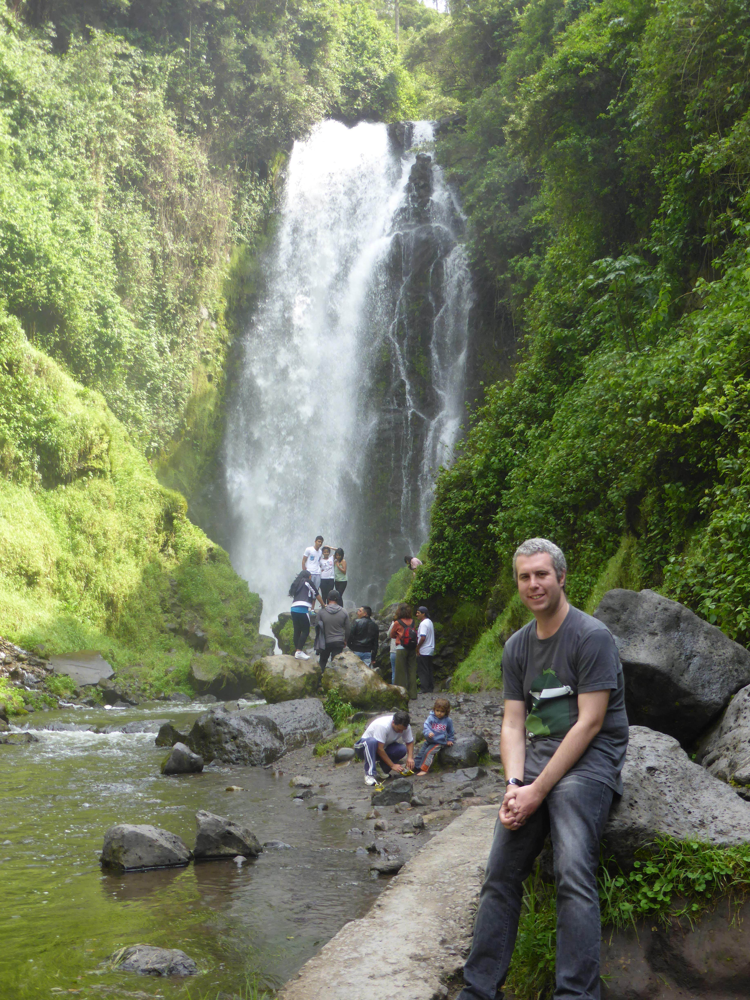
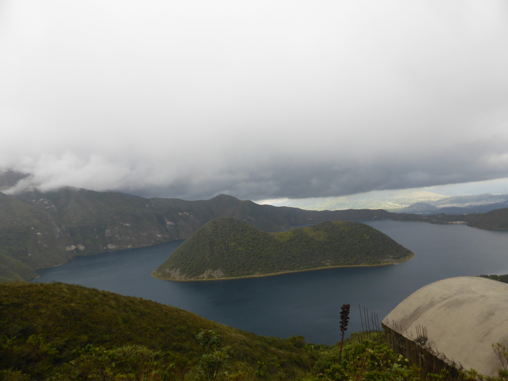
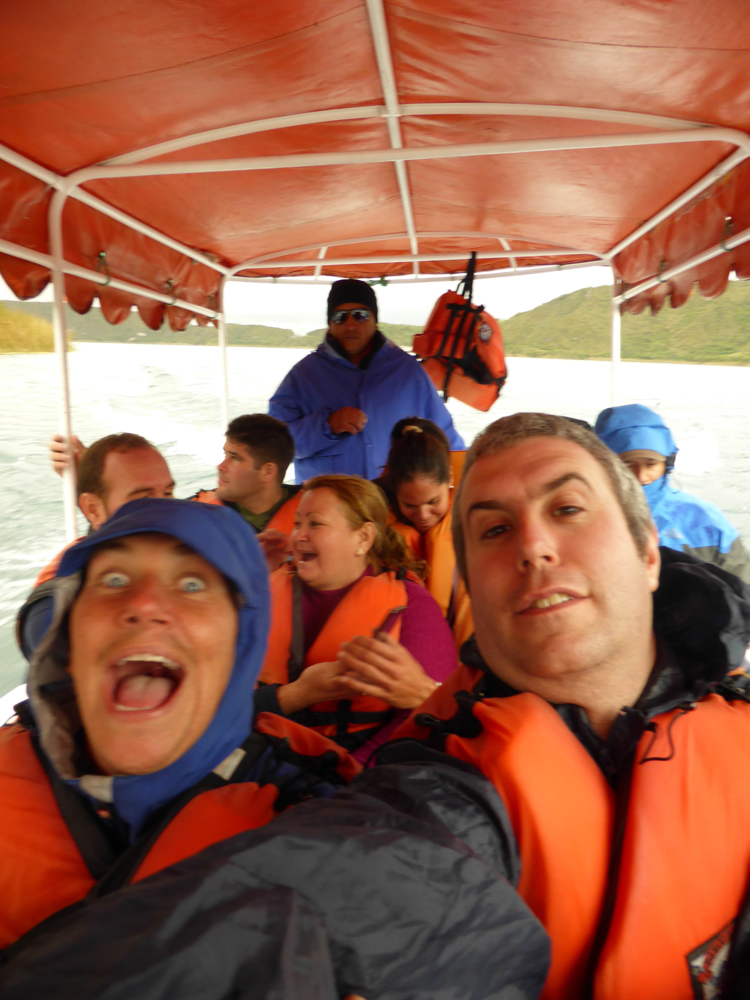
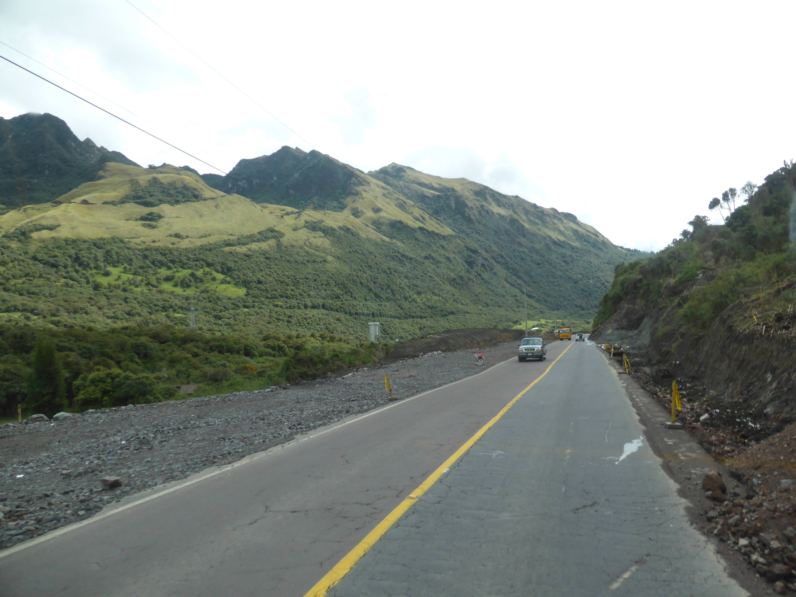
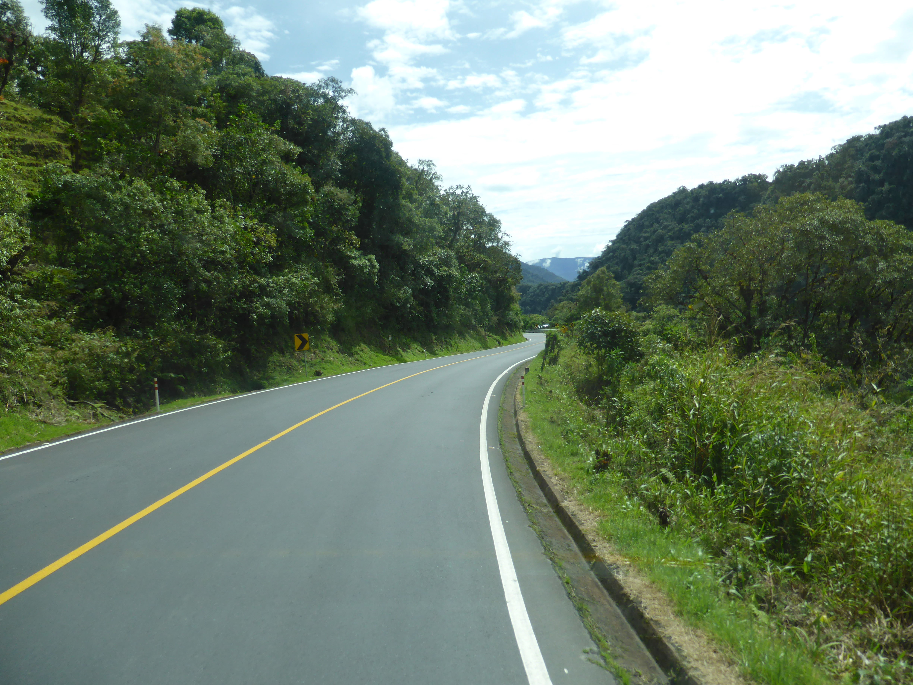
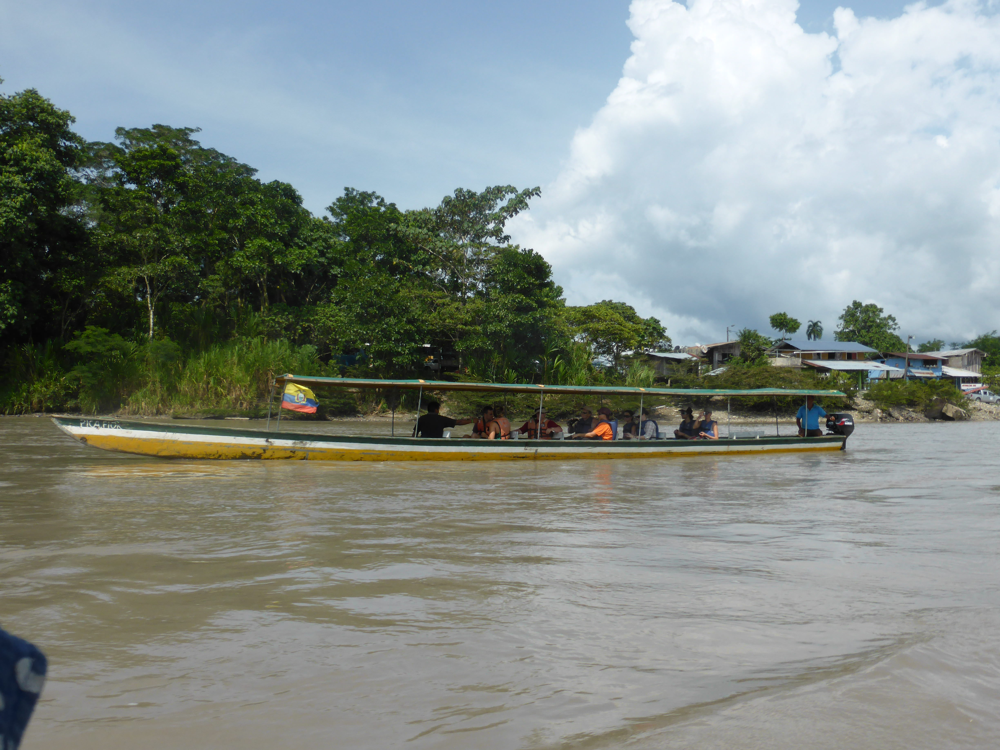
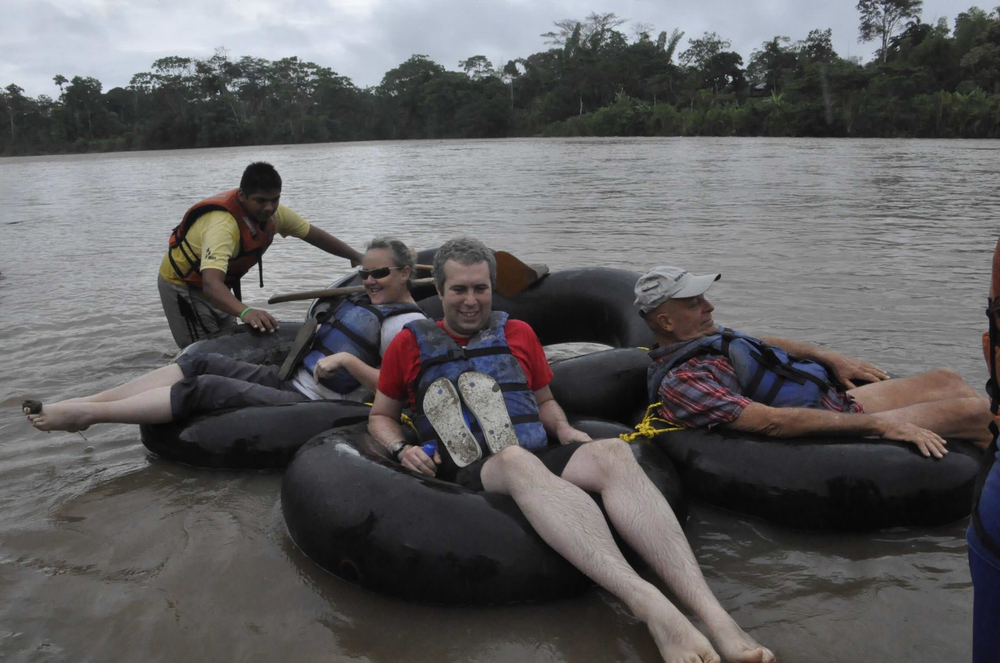
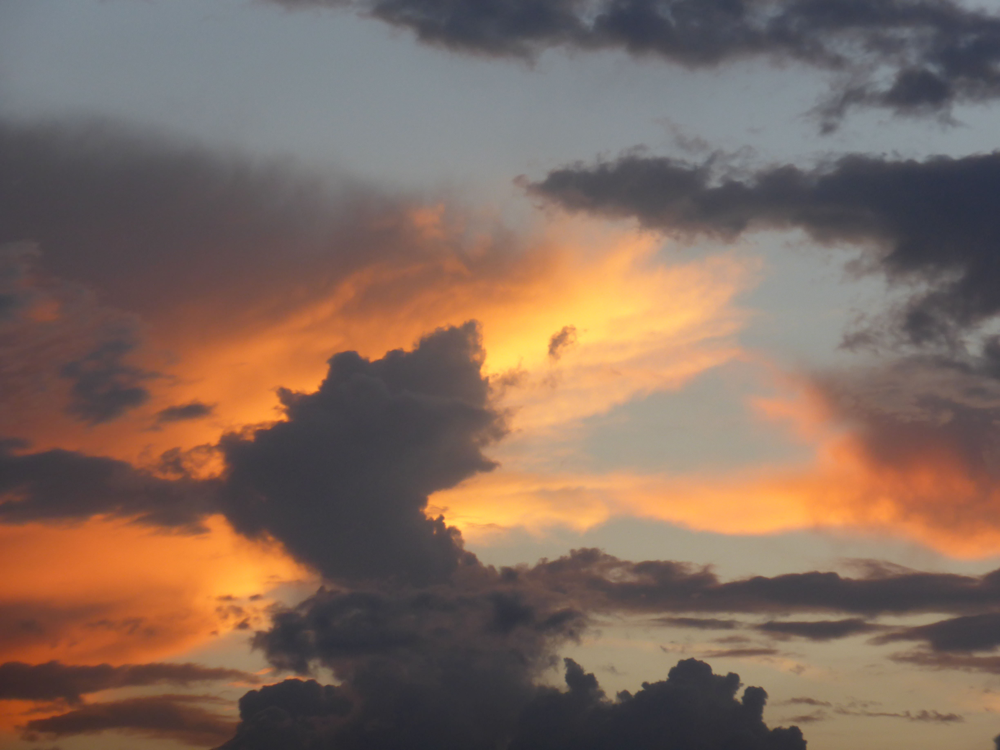

Dec. 2, 2013
Sunday (24th November) was our first day of travel and involved a four hour trip to Otavalo, a town to the north of Quito that is famous for its market… on Saturdays. The journey got us better acquainted with travel on our truck Magaly and we encountered a few of the little hiccups that are a natural part of travelling this way: power lines crashing down on to the highway, driver of your truck asking a policeman to take a photo of your truck snagged under the wires, wrong turns, and - funniest of all - getting a whole block’s worth of concerned locals to watch as your truck tries to turn a corner. Magaly is a wonderful truck, but subtle she is not!
To compensate for the market not quite being as enormous as advertised our tour leader arranged for a trip to some local highlights. Before that I had a blackberry pie (blackberries seem to be very popular here in Ecuador) and bought a lovely blue Alpaca wool blanket that I figure I will need on the chillier moments of the tour.
The trip really crammed in a lot of stuff. There was a visit to a waterfall that’s very important to the local Quechwa people, then there we visited a crater lake but unfortunately by this point the weather had turned wet and cold and I was wearing just a t-shirt. The boat trip around the lake was about the coldest I had been in a long while - including when I got hailed on during my last day in Hendon! After that we went to a suburb famous for cheap leather but most of us didn’t really need any so we settled in a cafe for a much needed coffee. Finally we went to meet a family that produces woven products - the kind that we’d seen in the market earlier on. I sort of regretted my earlier purchase because there was an even nicer blanket, though this one did cost significantly more and I didn’t want to blow my budget too early.



We got back so late that Neinke (our tour leader) was a bit worried about where we had got to. I dashed across the road for fried chicken (I know, I should do better!) before hitting the hay. I hardly spent any time at the hotel where we were staying, which was a shame because it was a really nice place. I would have at least liked to have swayed in the hammocks for a bit!
The next day involved another early start as we left at 6.30am for Misahualli, which is in the Ecuadorian Amazon region. After our first piss stop, I rode up front with our driver Alfonso and spent about two hours gasping in awe as we went over the Andes in the big truck. We had to stop a couple of times because of some dodgy readings about the balance in the truck and another time because we had misinterpreted where some road works had ended.
The roads over the Andes linking Quito to Tena are still being built and the sheer scale of their construction was as interesting to look at as the astounding scenery. Great swathes of mountain passes are being gouged out and roads laid in these cuttings. In about five to ten years time there will be a dual carriageway over the mountains and this will make a massive difference to people who are currently (as we were) forced to make an incredibly long journey over a short distance.
I took a stack of photos as we crossed the mountain passes, here are a few:


As soon as we arrived at Misahualli, we had to dig shorts out of our bags and dress for canyoning. Fortunately we are all given gumboots and had plenty of time to slap on sunblock and Deet.
At first the walk seemed rather sedate with all the usual pointing out of wildlife and what have you. I tried some lemon ants, and guess what? They were lemony! They wriggled a bit too. So that was all pretty good, but then came the water! My sense of balance is terrible. Asking me to straddle rocks and put my hands in particular places and trust in how my weight shifts from one position to another is usually a big no no. That said, by the end - after enduring all manner of cuts and scrapes - I did feel a bit better about doing it. The turning point was the waterfall. It took all of us a long time to get all of us up there and I took heart from the fact that everyone needed at least a bit of a hand. After that getting through the caves with the bats and their guano was easy enough.
When we got to the hotel I was covered in mud and bat shit and god knows what else, so it was straight into the shower and then after that straight into the swimming pool. Neither had particularly hot water, but it didn’t really matter because it was pretty warm outside. We had a nice dinner and then we were introduced to a tarantula - I forget his name. I let him crawl over my face and if I’m honest it was nice to have him sat on my face than to watch him crawl all over someone else’s! After that we all had a few cocktails and I went to bed only to find a massive cockroach-like creature in the room. Apparently our room had a tarantula nest above it, but I never saw one - though other people did find them in the rooms while we were staying there.
The second day in Misahualli was much more chilled out. We set off on the back of jeeps to the Napo river and sailed down in motorised canoes (boats I guess!) to a museum of Quechwa culture - basically a lot of different hunting traps and some more explanations of native life. We got to fire a blow gun too. I was so determined to blow hard enough that I completely missed the target! I sent the dart a decent distance though.
After that we set off in the “canoe” again and visited an animal sanctuary. They take in animals that the Ecuadorean government rescues - either because they are being kept illegally as pets or because they’ve been discovered injured. Most of the animals there are unable to return to the wild, which is a shame, but it is a good way to see the animals without traipsing into their habitat and disturbing them there.
After that we had a late lunch (including popcorn in soup - try it, it works!) and then visited the town of Misahualli to see some Capuchin monkeys. They really are the epitome of cheeky monkeys, they stole Angela’s mosquito repellent from her bag and tried to spray it everywhere. Another one stole some chicken from a grill and started throwing it from a tree above us. What they really like are onions, if you give them half an onion they will sit there and smear it all over themselves in order to protect against mosquito bites.
That night there was a massive thunderstorm, quite unlike any other that I have experienced, more for it’s duration than for its intensity or ferocity. I sat there in the dark and filmed a bit, so I may put that video up at some point.

On our last full day in Misahualli, we went tubing down the Napo river. In the morning it was cold and rainy, so it was not quite the relaxing experience that it could have been. Part of the problem is having to dunk your arse in the river for duration. Worse still, you can’t pee in the river for fear that a parasite will swim up your urethra and grow there (seriously, they have to be surgically removed - ouch!).
After forty minutes we stopped off to visit a native village where we ate grubs and had a steamed fish - tilapia - for lunch. The fish was delicious, and the grubs were surprisingly tasty once they were cooked. We were offered the chance to eat them raw but they looked just too big and juicy to contemplate it!
The remaining tubing was rather uneventful but fortunately took place in strong warm sunshine. We stopped off at an island half way back and it was at this point that I noticed that I had been quite badly bitten by mosquitos and my feet also got a bit sunburned - I think both of these happened because my various creams and sprays got washed off by the water.
All in all it was a fun day because I’d never really heard of tubing before and it was pretty relaxing to skim down the river that way, especially once the weather improved. Boy did I suffer later from those mossie bites and that sunburn on my feet though!
To be continued…

